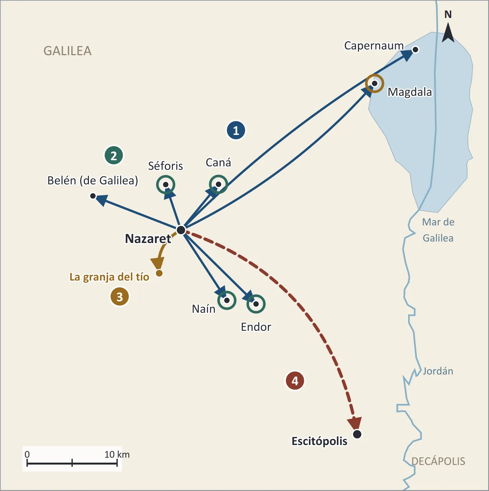
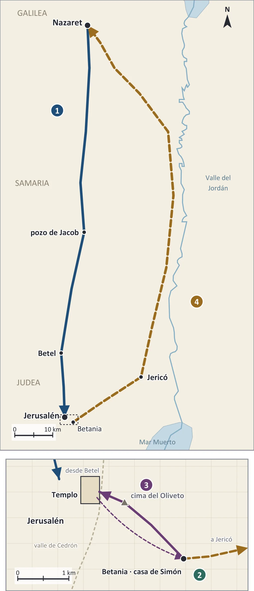
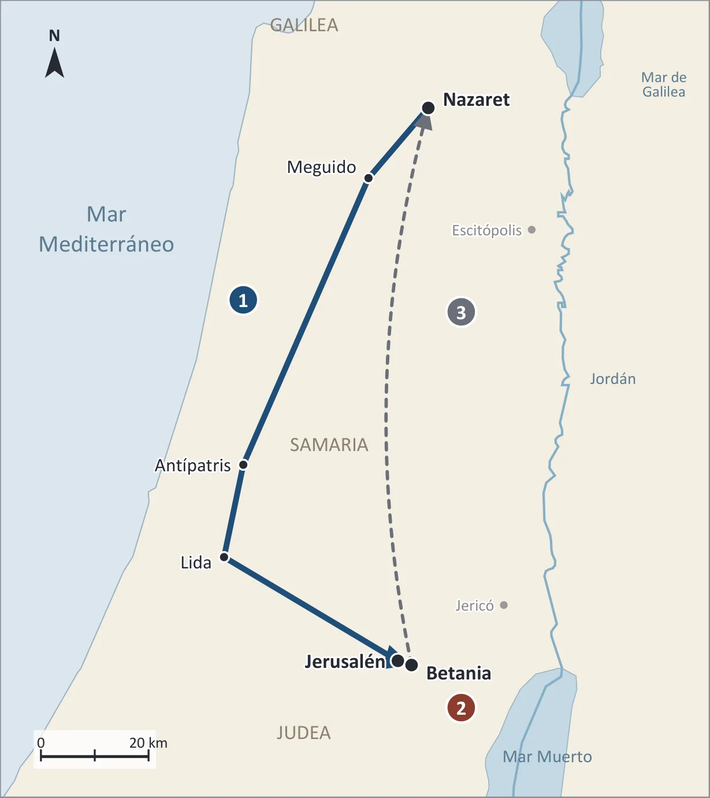
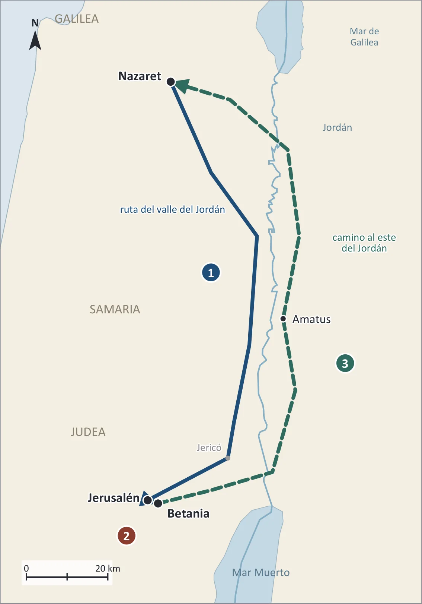
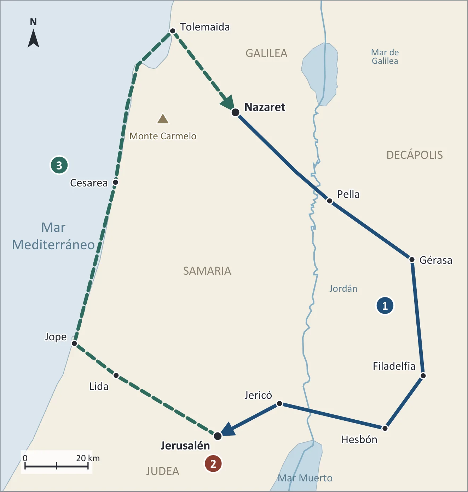
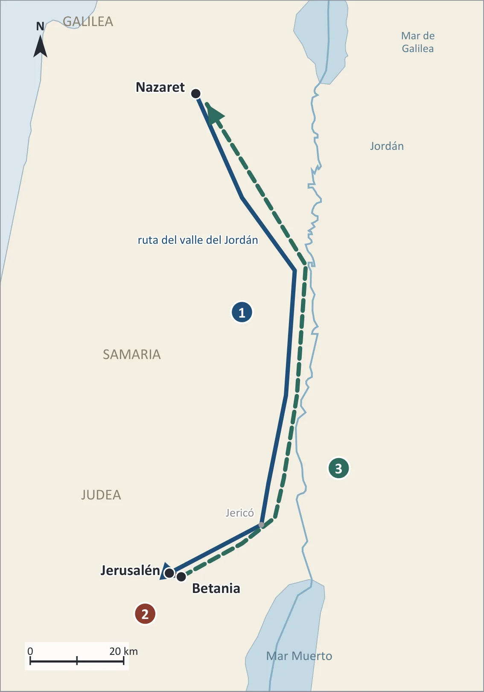

Parte I Del nacimiento a la edad adulta
Documentos 120–129
Documento 120El Autootorgamiento de Micael en Urantia
| Acontecimiento | El libro de Urantia | Biblia |
|---|---|---|
| 1. El Séptimo Cometido de Autootorgamiento | 120:1.1–7 | Ninguno |
| En Salvington, el hermano fideicomisario de Micael lo comisionó para su séptimo y último autootorgamiento. Esta vez Micael aparecería en Urantia como un bebé indefenso, enteramente sujeto a la voluntad de su Padre, mientras su hermano asumía la jurisdicción del universo y le garantizaba que no podría producirse ninguna rebelión durante su ausencia. | ||
| 2. Las Limitaciones del Autootorgamiento | 120:2.1–9 | Ninguno |
| Su hermano le expuso nueve consejos para el autootorgamiento: crecer como un niño de Urantia, poner fin técnicamente a la rebelión de Lucifer como Hijo del Hombre, actuar principalmente como maestro, derramar el Espíritu de la Verdad y revelar al Padre. Advirtió a Micael que se abstuviera de toda voluntad de poder sobrehumana después de la llegada de su Ajustador del Pensamiento. | ||
| 3. Los Consejos y las Admoniciones Adicionales | 120:3.1–12 | Ninguno |
| Tras consultar con Gabriel, el hermano añadió consejos complementarios: seguir las costumbres familiares aceptadas de la época, evitar enredarse en asuntos económicos y políticos, no fundar ninguna secta, no dejar escritos ni imágenes de sí mismo y probablemente no casarse. Luego, en presencia de todo Salvington reunido, Micael desapareció de en medio de ellos. | ||
| 4. La Encarnación — Hacer de Dos Uno | 120:4.1–6 | Ninguno |
| Cristo Micael era verdaderamente un ser de origen dual, pero no una doble personalidad; era Dios encarnado en el hombre. No llegó a ser Dios progresivamente, pues Jesús fue siempre Dios y hombre. El propósito espiritual supremo del autootorgamiento era realzar la revelación de Dios. | ||
Documento 121Los Tiempos del Autootorgamiento de Micael
| Acontecimiento | El libro de Urantia | Biblia |
|---|---|---|
| 1. El Occidente en el Primer Siglo Después de Cristo | 121:1.1–9 | Ninguno |
| Cuando nació Jesús, el mundo ofrecía las condiciones más favorables para el autootorgamiento de un Hijo Creador. Los sistemas políticos romanos, la lengua y la cultura griegas y las enseñanzas religiosas y morales judías unificaban el Occidente, mientras que los buenos caminos y los mares libres de piratas hacían florecer los viajes y el comercio. | ||
| 2. El Pueblo Judío | 121:2.1–12 | Ninguno |
| Los judíos, el grupo más influyente de los pueblos semitas, vivían en Palestina, encrucijada de tres continentes. Sus más de doscientas sinagogas por todo el mundo romano se convirtieron en bases para el nuevo evangelio, y bajo Herodes el Idumeo y más tarde bajo su hijo Herodes Antipas los judíos anhelaban un Mesías. | ||
| 3. Entre los Gentiles | 121:3.1–10 | Ninguno |
| La sociedad mediterránea del primer siglo estaba dividida en cinco clases: la aristocracia, los grupos comerciales, la pequeña clase media, el proletariado libre y los esclavos. La mitad de la población del Estado romano eran esclavos; sin embargo, había poca conciencia de clase, y el cristianismo no fue un movimiento económico. | ||
| 4. La Filosofía Gentil | 121:4.1–6 | Ninguno |
| El mundo gentil estaba dominado por cuatro filosofías derivadas del platonismo: la epicúrea, la estoica, la cínica y la escéptica. El estoicismo alcanzó una moralidad elevada pero no conoció a Dios como Padre, mientras que los cínicos, que conservaban restos de las enseñanzas de Melquisedek, ayudaron a preparar al pueblo común para los misioneros cristianos posteriores. | ||
| 5. Las Religiones Gentiles | 121:5.1–18 | Ninguno |
| Las religiones del Occidente incluían los cultos paganos, el culto al emperador, la astrología y las religiones de misterio. Los misterios, con su promesa de salvación personal, prepararon el camino para la difusión de las enseñanzas de Jesús; sin embargo, el cristianismo de Pablo los superó al basarse en la redención moral y en un hecho histórico. | ||
| 6. La Religión Hebrea | 121:6.1–9 | Ninguno |
| El pensamiento religioso de Jerusalén había recibido una fuerte influencia de la cultura y la filosofía griegas, favorecida en gran medida por la traducción griega de las escrituras hebreas. Filón de Alejandría armonizó la filosofía griega con la teología hebrea, y Pablo utilizó esta armonización como fundamento de su culto cristiano. | ||
| 7. Los Judíos y los Gentiles | 121:7.1–12 | Ninguno |
| Atados por la ley y la tradición, los judíos no quisieron compartir a Yahvé con los gentiles y así no llegaron a ser los mensajeros del nuevo evangelio. La evolución religiosa pasó hacia el oeste, a Europa, y el cristianismo de Pablo en Antioquía mezcló el evangelio de Jesús con la filosofía griega, las enseñanzas de los cultos de misterio y la moral judía. | ||
| 8. Los Escritos Prévios | 121:8.1–14 | Ninguno |
| El autor intermedio explica que se basó en los escritos perdidos de Andrés y en los cuatro evangelios. Marcos escribió a partir de los recuerdos de Pedro y terminó su evangelio en el año 68 d. de J.C.; Isador escribió el de Mateo en Pella en el 71; Lucas escribió en Acaya en el 82; y Natán comenzó el evangelio de Juan en el 101, a instancias de Juan. | ||
Documento 122El Nacimiento y la Infancia de Jesúsjunio de 8 a. de J.C. – octubre de 6 a. de J.C.
| Acontecimiento | El libro de Urantia | Biblia |
|---|---|---|
| 1. José y María | 122:1.1–3 | Ninguno |
| José descendía de una línea de artesanos hábiles, y David y Salomón no estaban en su ascendencia directa. El variado linaje de María incluía mujeres notables como Támar, Ruth y Betsabé. Gabriel eligió a esta pareja ideal y a la vez común como padres del autootorgamiento. | ||
| 2. Gabriel Se Aparece ante Elisabet | 122:2.1–8 | Lc 1:5-25 |
| A fines de junio del año 8 a. de J.C., Gabriel se apareció a Elizabeth al mediodía y le anunció que daría a luz a Juan, el precursor de un maestro divino. Durante cinco meses ella no se lo dijo a nadie, ni siquiera a su esposo, y Zacarías, escéptico durante mucho tiempo, solo quedó plenamente convencido por un sueño unas seis semanas antes del nacimiento de Juan.Difiere de la BibliaEl Evangelio de Lucas dice que un ángel se apareció a Zacarías mientras quemaba incienso en el templo y lo dejó mudo por su incredulidad, mientras que El libro de Urantia dice que Gabriel se apareció a Elizabeth y que Zacarías fue convencido más tarde por un sueño. | ||
| María visita a Elizabeth en la Ciudad de Judá | 122:2.6 | Lc 1:39-56 |
| Gabriel se apareció a María a mediados de noviembre del año 8 a. de J.C. Más tarde, con el consentimiento de José, María viajó a la Ciudad de Judá, a más de seis kilómetros al oeste de Jerusalén, en las colinas, para visitar a Elizabeth. Permaneció tres semanas mientras comparaban sus experiencias, y Elizabeth hizo mucho por fortalecer la fe de María.Difiere de la BibliaEl Evangelio de Lucas dice que María se quedó unos tres meses, que la criatura saltó en el vientre de Elizabeth y que María cantó un himno de alabanza, mientras que El libro de Urantia dice solo que se quedó tres semanas mientras las dos mujeres comparaban sus experiencias. | ||
| El nacimiento de Juan (25 de marzo del año 7 a. de J.C.) | 122:2.7 | Lc 1:57-80 |
| Juan nació en la Ciudad de Judá el 25 de marzo del año 7 a. de J.C. Zacarías y Elizabeth se regocijaron mucho, y en su circuncisión, al octavo día, le pusieron el nombre de Juan, tal como se les había indicado. Un sobrino de Zacarías ya había partido hacia Nazaret para llevar la noticia a María.Difiere de la BibliaEl Evangelio de Lucas dice que Zacarías escribió el nombre de Juan en una tablilla, recobró el habla y profetizó, mientras que El libro de Urantia no menciona ni que quedara mudo ni ninguna profecía. | ||
| 3. La Anunciación de Gabriel a María | 122:3.1–4 | Lc 1:26-38 |
| Una tarde, hacia la puesta del sol, el día después de que María concibiera, Gabriel se le apareció en su casa de Nazaret y le anunció que daría a luz un hijo llamado Josué, que inauguraría el reino del cielo. María se lo contó a José solo semanas después, y él, tras mucho reflexionar, concluyó que habían sido elegidos como padres del Mesías.Difiere de la BibliaEl Evangelio de Lucas dice que una virgen concebiría por el Espíritu Santo y que el niño recibiría el trono de David, mientras que El libro de Urantia sitúa el anuncio al día siguiente de que María ya hubiera concebido y no menciona ningún trono de David. | ||
| 4. El Sueño de José | 122:4.1–4 | Mt 1:18-25 |
| José solo se reconcilió tras un sueño en el que un mensajero celestial le dijo que en el hijo de María estaría la vida, y que su vida llegaría a ser la luz de la humanidad. José no era del linaje de David; un antepasado huérfano había sido adoptado por Sadoc, descendiente de David. Muchas profecías mesiánicas se aplicaron a Jesús mucho tiempo después.Difiere de la BibliaEl Evangelio de Mateo dice que un ángel habló a José, hijo de David, de una concepción por el Espíritu Santo que cumplía la profecía de la virgen, mientras que El libro de Urantia dice que no se dijo nada de la casa de David y que «una joven» se cambió más tarde a «una virgen». | ||
| Mapa 6La antigua Nazaret y el hogar de Jesús4 a. de J.C. – hacia 28 d. de J.C. | ||
| Mapa 2Nazaret y sus alrededores en la niñez3 a. de J.C. – 8 d. de J.C. | ||
| 5. Los Padres Terrenales de JesúsMapa 2-① El hogar en NazaretMapa 6-① El hogar de Jesús | 122:5.1–11 | Ninguno |
| José era callado y reflexivo, y sostenía las opiniones orientales, o babilónicas, de la religión judía; María era alegre y práctica, y se inclinaba hacia la interpretación helenística más amplia. Se casaron en la casa de María, cerca de Nazaret, cuando José tenía veintiún años, y Jesús heredó la gentileza de su padre y el don de maestra de su madre. | ||
| 6. La Casa en NazaretMapa 2-② La colina de SimeónMapa 6-② La fuente de la aldeaMapa 6-⑤ La colina de SimeónMapa 6-⑥ El huerto familiar | 122:6.1–3 | Ninguno |
| El hogar de Jesús estaba cerca de la colina alta de la parte norte de Nazaret, en las afueras de la aldea. Era una casa de piedra de una sola habitación con techo plano, amueblada con una mesa baja de piedra, un telar, y un molino y un horno en el patio trasero. Después del nacimiento de Marta, José añadió una habitación grande que servía de taller y de dormitorio. | ||
| Mapa 1El nacimiento de Jesús y la huida a Egiptoagosto de 7 a. de J.C. – octubre de 4 a. de J.C. | ||
| 7. El Viaje a BelénMapa 1-① De Nazaret a Belén | 122:7.1–8 | Lc 2:1-5 |
| El censo de Augusto se realizó en el reino de Herodes con un año de retraso, en el año 7 a. de J.C. A pesar de las objeciones de José, María insistió en ir, y salieron de Nazaret el 18 de agosto, viajando por el valle del Jordán y Jericó. Al llegar a Belén el 20 de agosto, se alojaron en un depósito de granos de los establos excavados en la roca, debajo de la posada.Difiere de la BibliaEl Evangelio de Lucas dice que José fue a inscribirse porque era de la casa de David, mientras que El libro de Urantia dice que María no necesitaba ir pero eligió acompañarlo, y que el censo se demoró un año por los problemas de Herodes. | ||
| 8. El Nacimiento de Jesús | 122:8.1–7 | Lc 2:6-7 |
| Al mediodía del 21 de agosto del año 7 a. de J.C., en el alojamiento del establo en Belén, María dio a luz a Jesús con la ayuda de mujeres que viajaban con ellos y lo acostó en un pesebre. Al día siguiente José se inscribió y la familia se trasladó a la posada; a pedido de Zacarías y Elizabeth permanecieron en Belén más de un año.Difiere de la BibliaEl Evangelio de Lucas dice solo que el niño fue acostado en un pesebre porque no había lugar en el mesón, mientras que El libro de Urantia da la fecha y la hora del mediodía, el traslado a la posada al día siguiente y una estadía de más de un año. | ||
| Circuncisión e imposición del nombre al octavo día | 122:8.2 | Lc 2:21 |
| El niño prometido nació en Belén exactamente de la misma manera que todos los niños antes y después. Al octavo día fue circuncidado según la práctica judía y recibió formalmente el nombre de Josué (Jesús). | ||
| Los serafines cantan sobre el pesebre | 122:8.5 | Lc 2:8-20 |
| En el nacimiento de Jesús, al mediodía, los serafines de Urantia cantaron himnos de gloria sobre el pesebre de Belén, pero sus cantos no fueron oídos por oídos humanos. Ningún pastor ni otra criatura mortal vino a rendir homenaje al niño hasta que llegaron los sacerdotes de Ur.Difiere de la BibliaEl Evangelio de Lucas dice que ángeles y una multitud de las huestes celestiales se aparecieron de noche a unos pastores y que los pastores vinieron a ver al niño, mientras que El libro de Urantia dice que los himnos seráficos no fueron oídos y que no vino ningún pastor. | ||
| La visita de los sacerdotes de Ur | 122:8.6 | Mt 2:1-8 |
| Tres sacerdotes de Ur, en Mesopotamia, habían oído que la luz de la vida aparecería en la tierra como un niño entre los judíos, y fueron en su busca. Tras semanas de búsqueda inútil en Jerusalén, Zacarías los envió a Belén, donde encontraron al niño, de casi tres semanas, y dejaron sus regalos a María.Difiere de la BibliaEl Evangelio de Mateo dice que unos magos del Oriente siguieron una estrella y preguntaron a Herodes, mientras que El libro de Urantia dice que tres sacerdotes de Ur vinieron tras enterarse del sueño de un maestro, y que Zacarías los dirigió a Belén. | ||
| La leyenda de la estrella de Belén | 122:8.7 | Mt 2:9-12 |
| Los sabios de Ur no vieron ninguna estrella que los guiara a Belén. La leyenda de la estrella surgió más tarde de las conjunciones naturales de Júpiter y Saturno en la constelación de Piscis el 29 de mayo, el 29 de septiembre y el 5 de diciembre del año 7 a. de J.C., sobre las cuales una generación posterior construyó la historia de la estrella y los magos.Difiere de la BibliaEl Evangelio de Mateo dice que una estrella guió a los magos y se detuvo sobre el lugar donde estaba el niño, mientras que El libro de Urantia dice que no hubo tal estrella y que la leyenda nació de una conjunción de Júpiter y Saturno. | ||
| 9. La Presentación en el Templo | 122:9.1–28 | Lc 2:22-39 |
| José y María subieron al templo de Jerusalén para presentar a su primogénito a los sacerdotes para su redención y ofrecer el sacrificio por la purificación de María. Zacarías, mediante una señal convenida de antemano, señaló a Jesús, y Simeón, un cantor, asombró a todos cantando un poema escrito por Ana, una poetisa.Difiere de la BibliaEl Evangelio de Lucas dice que Simeón, movido por el Espíritu Santo, tomó al niño en sus brazos y que Ana profetizó, mientras que El libro de Urantia dice que Zacarías identificó a Jesús mediante una señal convenida y que el canto era un poema que Ana había escrito. | ||
| 10. Herodes ActúaMapa 1-② Huida a Alejandría, en Egipto | 122:10.1–4 | Mt 2:13-23 |
| Alertado por los sacerdotes de Ur y por los relatos del canto en el templo, Herodes buscó al niño en vano, y hacia mediados de octubre del año 6 a. de J.C. ordenó matar a todos los niños varones menores de dos años en Belén; murieron dieciséis. Advertidos por medio de Zacarías, José y María huyeron la noche anterior a Alejandría, donde se quedaron dos años completos.Difiere de la BibliaEl Evangelio de Mateo dice que un ángel del Señor advirtió a José en sueños, mientras que El libro de Urantia dice que un creyente de la corte de Herodes informó a Zacarías, y que la matanza de dieciséis niños ocurrió más de un año después del nacimiento. | ||
Mapa 6La antigua Nazaret y el hogar de Jesús
4 a. de J.C. – hacia 28 d. de J.C. · Documentos 122–150 · croquis de ubicación

- ①El hogar de JesúsUna casa de piedra de una sola habitación con techo plano, construida por José con la ayuda de dos de sus hermanos, con un edificio contiguo para los animales y, en el patio trasero, el cobertizo del horno y del molino. María tenía un palomar encima del establo. De niño jugaba con Juan en la arena sobre el techo de la casa. Estaba en las afueras, más o menos a mitad de camino entre la base de la colina y el camino a Caná. [122:5.9; 122:6.1–2; 123:3.4; 123:4.4]
- ②La fuente de la aldeaLa fuente en la parte oriental del pueblo, centro de encuentros y chismes de todo el pueblo. Antes de cumplir ocho años ya había conversado allí con las madres y las jóvenes de Nazaret, y se hizo amigo de Natán, el alfarero que trabajaba cerca de la fuente. [122:6.1; 123:5.15]
- ③El taller de reparación de caravanasEl pequeño taller que José construyó a mediados del verano del año 3 a. de J.C., cerca de la fuente de la aldea y de la parada de las caravanas. Aquí Jesús escuchaba a los viajeros de las caravanas venidos de los cuatro rincones de la tierra. En el año 12 d. de J.C. comenzó a volver a comprarlo y trabajó allí; los niños se reunían junto al taller para oír sus relatos. [123:1.6; 127:3.1; 127:3.7; 128:6.11]
- ④La sinagogaDe joven habló aquí a menudo, y el manuscrito que más tarde le entregaron era uno que él mismo le había regalado. Años después, tras hablar en esta sinagoga, una turba lo arrastró hasta la cima de una colina escarpada cercana. [150:8.1; 150:9.3]
- ⑤La colina de SimeónLa colina alta en la parte norte de Nazaret, de las más altas del sur de Galilea. Desde el verano de su decimocuarto año subía a ella a menudo para orar y meditar; en su oración en la cima declaró que estaría siempre sujeto a la voluntad de su Padre del Paraíso. [122:6.1; 126:1.1–2; 128:7.2]
- ⑥El huerto familiarHacia su decimoquinto año arrendó un terreno justo al norte de la casa y lo dividió en parcelas de huerto familiar, que trabajaba con sus hermanos y hermanas menores. Su paseo favorito era el sendero estrecho que serpenteaba hacia el nordeste, alrededor de la base de la colina, hasta el camino de Séforis. [122:6.1; 126:5.10]
Mapa 2Nazaret y sus alrededores en la niñez
3 a. de J.C. – 8 d. de J.C. · Documentos 122–126

- ①El hogar en NazaretUna casa de piedra de una sola habitación construida por José con la ayuda de dos de sus hermanos. Estaba en las afueras, no lejos de la colina alta de la parte norte del pueblo, un poco al sur y al este del promontorio meridional de la colina, hacia el camino a Caná, y a cierta distancia de la fuente de la aldea. [122:5.9; 122:6.1–2]
- ②La colina de SimeónLa colina al noroeste de Nazaret. En el verano de su decimocuarto año subía a ella a menudo para orar y meditar. Desde la cima divisaba Meguido, Taanac, las colinas de Dotán, y Ebal y Gerizim, recordando la historia del pueblo de su padre (líneas punteadas). Salvo la cordillera del Monte Tabor al este y la colina de Naín, era la colina más alta del sur de Galilea. [122:6.1; 126:1.1–2]
- ③La granja del tíoCasa de campo del hermano de su madre, en el camino de Meguido cerca de Sarid, varios kilómetros al sur de Nazaret. Huyendo de una epidemia en julio del año 3 a. de J.C., se quedaron allí más de dos meses, su primera experiencia en una granja; más tarde la visitó a menudo. [123:1.7; 123:6.1; 124:3.1]
- ④El tío pescador en MagdalaDispensado de la escuela una semana cada mes por su buen trabajo, a menudo la pasaba con su tío pescador a orillas del Mar de Galilea, cerca de Magdala. El texto no indica la ruta (línea discontinua). [123:6.1; 124:3.1]
Mapa 1El nacimiento de Jesús y la huida a Egipto
agosto de 7 a. de J.C. – octubre de 4 a. de J.C. · Documentos 122–123

- ①De Nazaret a Belén18–20 de agosto del año 7 a. de J.C. El viaje para inscribirse en el censo. Rodeando las estribaciones del Monte Gilboa, la primera noche junto al río Jordán; pasando por el pie del Monte Sartaba hasta Jericó para la segunda noche; luego, por Jerusalén, hasta Belén. [122:7.4–6]
- ②Huida a Alejandría, en EgiptoMediados de octubre del año 6 a. de J.C., la noche antes de la matanza de los niños. Viajaron solos; el texto no indica la ruta (línea discontinua). [122:10.4]
- ③De regreso a Jope en barcoFines de agosto del año 4 a. de J.C., en el barco de su amigo Esraeon. Fueron directamente a Belén y pasaron allí todo el mes de septiembre. [123:0.4]
- ④Regreso a NazaretComienzos de octubre del año 4 a. de J.C., por Lida y Escitópolis, llegando al cuarto día. [123:0.6; 123:1.1]
Documento 123La Infancia de Jesúsagosto de 4 a. de J.C. – 2 d. de J.C.
| Acontecimiento | El libro de Urantia | Biblia |
|---|---|---|
| Dos años en Alejandría y el regreso a casaMapa 1-③ De regreso a Jope en barcoMapa 1-④ Regreso a Nazaret | 123:0.1–6 | Ninguno |
| En Alejandría José trabajó como carpintero y luego llegó a ser capataz de obreros en un edificio público, mientras Jesús crecía sano y recibía una copia griega de las escrituras hebreas. Tras la muerte de Herodes la familia navegó hasta Jope, adonde llegó a fines de agosto del año 4 a. de J.C., y a comienzos de octubre José persuadió a María de partir hacia Nazaret. | ||
| 1. De Regreso a NazaretMapa 2-③ La granja del tíoMapa 6-③ El taller de reparación de caravanas | 123:1.1–7 | Mt 2:23; Lc 2:39-40 |
| Al llegar a Nazaret al cuarto día, la familia recuperó la casa donde había estado viviendo el hermano de José. Jesús, de tres años y dos meses, se hizo amigo de un niño vecino llamado Jacob. Santiago nació el 2 de abril del año 3 a. de J.C., y ese verano José construyó un taller cerca de la fuente de la aldea y de la parada de las caravanas.Difiere de la BibliaEl Evangelio de Mateo dice que se establecieron en Nazaret para cumplir la palabra de un profeta, y Lucas dice que regresaron poco después de cumplir con la ley, mientras que El libro de Urantia dice que regresaron tras dos años en Egipto por decisión propia de José. | ||
| 2. El Quinto Año (Año 2 a. de J.C.) | 123:2.1–16 | Ninguno |
| El 11 de febrero del año 2 a. de J.C., un Ajustador del Pensamiento vino a morar en Jesús, aunque él no tenía más conciencia de ello que los demás niños. Su hermana Miriam nació el 11 de julio, y cuando Jesús cumplió cinco años, el 21 de agosto, pasó según la costumbre galilea al cuidado de su padre para su educación. | ||
| Mapa 3Pueblos de Galilea visitados con su padre1 a. de J.C. – 5 d. de J.C. | ||
| 3. Acontecimientos del Sexto Año (Año 1 a. de J.C.)Mapa 3-① Las obras de construcción de José | 123:3.1–10 | Ninguno |
| José enseñó griego a Jesús con las escrituras recibidas en Alejandría. Jesús sufrió su primera gran conmoción cuando su padre admitió que no sabía qué causaba un terremoto. A comienzos del verano del año 1 a. de J.C. la familia de Zacarías los visitó, y Jesús conoció a Juan; insistía en hablar con su Padre celestial como hablaría con José. | ||
| 4. El Séptimo Año (Año 1 d. de J.C.) | 123:4.1–9 | Ninguno |
| En enero del año 1 d. de J.C. cayó sobre Galilea una gran tormenta de nieve, y en julio Jesús se lastimó al caer por la escalera de piedra durante una tormenta de arena, un accidente que no se habría podido evitar. Los intermedios no intervienen en los accidentes materiales salvo por orden de sus superiores. Su hermano José nació el 16 de marzo. | ||
| 5. Los Días Escolares en Nazaret | 123:5.1–15 | Ninguno |
| A los siete años, en agosto, Jesús entró en la escuela de la sinagoga de Nazaret, donde aprendió hebreo y la ley con el chazán, y se graduó a los trece. Conversaba en griego con los viajeros de las caravanas, eligió un pasaje de Isaías como texto de su cumpleaños, y los sábados subía a las colinas con su padre para contemplar Galilea. | ||
| 6. Su Octavo Año (Año 2 d. de J.C.)Mapa 2-④ El tío pescador en Magdala | 123:6.1–9 | Ninguno |
| En su octavo año Jesús pasaba una semana cada mes con su tío pescador cerca de Magdala o en la granja de otro tío, y comenzó a estudiar matemáticas y el arpa. Simón nació el 14 de abril. Nacor, un rabino enviado a instancias de Zacarías, insistió en que estudiara en Jerusalén, pero tras hablar con su Padre celestial, Jesús eligió quedarse en casa. | ||
Mapa 3Pueblos de Galilea visitados con su padre
1 a. de J.C. – 5 d. de J.C. · Documentos 123–124

- ①Las obras de construcción de JoséDurante varios años después del año 1 a. de J.C., José realizó muchos trabajos en Caná, Belén (de Galilea), Magdala, Naín, Séforis, Capernaum y Endor. Cuando Santiago tuvo edad suficiente para ayudar en casa, Jesús hizo frecuentes viajes con su padre a estos pueblos, observador atento que acumulaba conocimientos sobre el hombre y su manera de vivir. [123:3.8]
- ②Viajes a los pueblos cercanosCuando escaseaban el trabajo y los viajes de las caravanas, iba con su padre a las cercanas Caná, Endor y Naín. Visitaba con frecuencia Séforis, a poco más de cinco kilómetros al noroeste de Nazaret, capital de Galilea y una de las residencias de Herodes Antipas (círculos). [124:1.12]
- ③La granja del tío y MagdalaEn el año 5 d. de J.C., mientras viajaba con su padre, visitaba también con frecuencia la granja de su tío y de vez en cuando iba a Magdala a pescar con el tío que tenía su base cerca de esa ciudad. [124:3.1]
- ④Los juegos de EscitópolisHacia mediados de mayo del año 5 d. de J.C., fue con su padre en un viaje de negocios a Escitópolis (la antigua Bet-seán), la principal ciudad griega de la Decápolis. Insistió en ver los juegos anuales de las ciudades de la Decápolis en el anfiteatro y quedó entusiasmado con ellos. [124:3.6–7]
Documento 124La Niñez Posterior de Jesús2 d. de J.C. – abril de 7 d. de J.C.
| Acontecimiento | El libro de Urantia | Biblia |
|---|---|---|
| 1. El Noveno Año de Jesús (Año 3 d. de J.C.)Mapa 3-② Viajes a los pueblos cercanos | 124:1.1–13 | Ninguno |
| En el año 3 d. de J.C. Jesús cuestionó la enseñanza del chazán de que todas las imágenes y pinturas eran idólatras, y su dibujo al carbón del maestro hizo que los ancianos acudieran a José. José defendió el segundo mandamiento, y Jesús obedeció. A fines de junio subió al Monte Tabor con su padre, y Marta nació el 13 de septiembre. | ||
| 2. El Décimo Año (Año 4 d. de J.C.) | 124:2.1–10 | Ninguno |
| El sábado 5 de julio del año 4 d. de J.C., paseando con su padre, Jesús expresó por primera vez sentimientos que revelaban su creciente conciencia de la naturaleza inusual de su misión. Entró en la escuela avanzada de la sinagoga y agitó a Nazaret con sus preguntas. No quería pelear por sus derechos, y Jacob, el hijo del cantero, lo defendía. | ||
| 3. El Onceavo Año (Año 5 d. de J.C.)Mapa 3-③ La granja del tío y MagdalaMapa 3-④ Los juegos de Escitópolis | 124:3.1–10 | Ninguno |
| Cuando Judá nació, el 24 de junio del año 5 d. de J.C., María estuvo gravemente enferma, y Jesús, que aún no tenía once años, asumió las responsabilidades de hijo primogénito. En mayo visitó Escitópolis con su padre y vio los juegos griegos; su sugerencia de construir un anfiteatro en Nazaret provocó la única vez que vio a su padre enojado con él. | ||
| 4. El Año Doceavo (Año 6 d. de J.C.) | 124:4.1–9 | Ninguno |
| A los doce años Jesús trabajaba regularmente en el taller de carpintería de la casa y administraba sus propias ganancias, y, sin comprender su naturaleza dual, pasó por períodos de incertidumbre acerca de su misión. Cuando calificó de idólatra el rito de tocar el pergamino del marco de la puerta, José lo quitó, y Jesús luchó por conciliar sus convicciones con la lealtad a sus padres. | ||
| 5. El Año Treceavo (Año 7 d. de J.C.) | 124:5.1–6 | Lc 2:41-51 |
| Su hermano menor, Amós, nació el 9 de enero del año 7 d. de J.C., y hacia mediados de febrero Jesús adquirió la certeza humana de que estaba destinado a cumplir una misión en la tierra. El 20 de marzo se graduó de la escuela de la sinagoga de Nazaret como «hijo de los mandamientos», pero presintió que nunca estudiaría en Jerusalén como planeaban los ancianos.Difiere de la BibliaEl Evangelio de Lucas dice solo que sus padres subían cada año en la Pascua y lo llevaron cuando tenía doce años, mientras que El libro de Urantia dice que su graduación como hijo de los mandamientos lo habilitó para su primera Pascua. | ||
| Mapa 4El primer viaje a Jerusalén4–7 de abril de 7 d. de J.C. | ||
| 6. El Viaje a JerusalénMapa 4-① De Nazaret a JezreelMapa 4-② Rodeando el Monte Gilboa hacia el valle del JordánMapa 4-③ Pasando el Jaboc hasta el Monte SartabaMapa 4-④ JericóMapa 4-⑤ Por Betania a Jerusalén | 124:6.1–18 | Ninguno |
| El 4 de abril del año 7 d. de J.C., un grupo de 103 personas salió de Nazaret hacia Jerusalén por el valle del Jordán. En Betania Jesús conoció a los hijos de Simón, María, Marta y Lázaro, y comenzó una amistad de toda la vida. La noche antes del sábado de Pascua, un mensajero enviado por Emanuel le dijo que había llegado la hora de ocuparse de los asuntos de su Padre. | ||
Mapa 4El primer viaje a Jerusalén
4–7 de abril de 7 d. de J.C. · Documento 124

- ①De Nazaret a JezreelTemprano por la mañana del lunes 4 de abril del año 7 d. de J.C., un grupo de 103 personas salió de Nazaret. Viajando hacia el sur pasaron Sunem a su izquierda; en Jezreel giraron hacia el este para evitar cruzar Samaria. [124:6.1–3]
- ②Rodeando el Monte Gilboa hacia el valle del JordánAl rodear la base del Gilboa, contemplaron la ciudad griega de Escitópolis solo desde lejos. Bajando hacia el sur por el valle del Jordán, a poco más de tres horas desde el punto frente a Escitópolis, acamparon la primera noche junto a un manantial burbujeante. [124:6.3–5]
- ③Pasando el Jaboc hasta el Monte SartabaEl segundo día pasaron por donde el Jaboc desemboca en el Jordán desde el este, y acamparon la segunda noche cerca de la base del Monte Sartaba, en cuya cima estaba la fortaleza alejandrina. [124:6.6]
- ④JericóEl tercer día pasaron por dos aldeas construidas recientemente por Herodes y al anochecer llegaron a Jericó, donde se quedaron hasta el día siguiente. Esa tarde caminaron unos dos kilómetros y medio hasta el sitio de la antigua Jericó. [124:6.7]
- ⑤Por Betania a JerusalénLa subida del cuarto día a Jerusalén. En Betania, en las laderas orientales del Oliveto, se detuvieron en la casa de Simón y conocieron a María, Marta y Lázaro. Desde la cima del Oliveto Jesús vio por primera vez la Ciudad Santa y el templo; el jueves por la tarde entraron en Jerusalén y se alojaron en la casa de un pariente acomodado de María. [124:6.8–12]
Documento 125Jesús en Jerusalénabril de 7 d. de J.C.
| Acontecimiento | El libro de Urantia | Biblia |
|---|---|---|
| Mapa 5Jerusalén y el temploabril de 7 d. de J.C., su primera Pascua | ||
| (Introducción)Mapa 5-① Primera visita al templo | 125:0.1–7 | Ninguno |
| Jesús se negó a ir si su madre no iba, de modo que María también subió. En el templo le molestó que separaran a su madre en el atrio de las mujeres y le decepcionaron los rutinarios ritos de consagración. Le dijo a José que el Padre celestial no podía mirar con ira a sus hijos extraviados. | ||
| 1. Jesús Visita el Templo | 125:1.1–5 | Ninguno |
| En el patio de los gentiles Jesús se conmocionó por el bullicio de los cambistas y mercaderes y se indignó ante las cortesanas que se exhibían en los recintos del templo. Asqueado por la matanza y la sangre en el patio de los sacerdotes, rogó a su padre que lo llevara de allí, y José lo condujo a la hermosa puerta y le explicó las fiestas. | ||
| 2. Jesús y la PascuaMapa 5-② La Pascua en BetaniaMapa 5-③ Las conferencias de enseñanza y el lugar santísimo | 125:2.1–12 | Ninguno |
| Cinco familias de Nazaret celebraron la Pascua en la casa de Simón de Betania, donde Jesús relató el origen de la Pascua. Comenzó a contemplar una Pascua sin derramamiento de sangre, y durante toda la semana escuchó las discusiones del templo entre los nuevos hijos de los mandamientos y conversó con más de ciento cincuenta jóvenes. | ||
| 3. La Partida de José y MaríaMapa 5-④ El grupo parte | 125:3.1–2 | Lc 2:41-44 |
| El primer día de la semana después de la Pascua, el grupo de Nazaret se puso en camino, con los hombres y las mujeres viajando en grupos separados. Jesús, absorto en una discusión del templo sobre los ángeles, se quedó atrás; María suponía que estaba con los hombres y José que estaba con las mujeres, de modo que no lo echaron de menos hasta llegar a Jericó.Difiere de la BibliaEl Evangelio de Lucas dice solo que los padres pensaban que estaba en la compañía, mientras que El libro de Urantia explica que los hombres y las mujeres viajaban por separado, que cada uno de los padres suponía que estaba con el otro, y que Jesús estaba absorto en una discusión sobre los ángeles. | ||
| 4. El Primer y el Segundo Día en el TemploMapa 5-⑤ Entre Betania y el templo | 125:4.1–4 | Lc 2:45 |
| Jesús escuchó las discusiones de la tarde y pasó la noche en la casa de Simón en Betania. Al día siguiente, en la cima del Oliveto, lloró por el pueblo, y luego se unió con audacia a las discusiones con sus preguntas. Al preguntársele su edad, respondió que le faltaban cuatro meses para los trece, pero se resolvió que podía seguir en las discusiones.Difiere de la BibliaEl Evangelio de Lucas dice que Jesús tenía doce años, mientras que El libro de Urantia dice que le faltaban poco más de cuatro meses para los trece y que técnicamente se había graduado antes de tiempo en Nazaret y había sido consagrado en la Pascua. | ||
| José y María vuelven a JerusalénMapa 5-⑥ Sus padres regresan a buscarlo | 125:4.2 | Lc 2:45 |
| Mientras Jesús lloraba por el pueblo en la cima del Oliveto temprano esa mañana y seguía hacia el templo, José y María se levantaron al amanecer para volver sobre sus pasos a Jerusalén. Fueron primero a casa de los parientes con quienes se habían alojado durante la semana de Pascua, pero nadie lo había visto; después de buscar todo el día, volvieron allí a pasar la noche.Difiere de la BibliaEl Evangelio de Lucas dice solo que los padres volvieron a Jerusalén buscándolo, mientras que El libro de Urantia dice que primero buscaron en la casa de sus parientes mientras Jesús pasaba las noches en la casa de Simón en Betania. | ||
| 5. El Tercer Día en el Templo | 125:5.1–10 | Ninguno |
| Al tercer día muchos espectadores se reunieron mientras Jesús interrogaba a los maestros durante más de cuatro horas. Preguntó qué existe realmente en el lugar santísimo, por qué se segrega a las madres, por qué se sacrifican animales, si es correcto el comercio en el templo y si el Mesías ha de ser un príncipe temporal. Sus padres pasaron varias veces por el templo sin encontrarlo. | ||
| 6. El Cuarto Día en el TemploMapa 5-⑦ De vuelta a casa | 125:6.1–13 | Lc 2:46-51 |
| Al cuarto día el director sentó a Jesús a su lado para que expusiera sus opiniones sobre la oración y la adoración, y sus padres, al pasar por el templo camino a la casa de Zacarías, reconocieron su voz. Cuando María le reprochó, él dijo que era tiempo de ocuparse de los asuntos de su Padre, y en el Oliveto, camino a casa, clamó por Jerusalén.Difiere de la BibliaEl Evangelio de Lucas dice que los padres lo hallaron en el templo después de tres días, mientras que El libro de Urantia dice que lo encontraron al cuarto día por casualidad cuando se dirigían a la casa de Zacarías, y que él se lamentó por Jerusalén en el camino de regreso. | ||
Mapa 5Jerusalén y el templo
abril de 7 d. de J.C., su primera Pascua · Documento 125

- ①Primera visita al temploEn la semana de Pascua fue consagrado como hijo de la ley. Le indignó que su madre tuviera que ir al atrio de las mujeres. Los cambistas y vendedores en el patio de los gentiles y la matanza en el patio de los sacerdotes lo conmocionaron y le causaron náuseas. José le mostró «la hermosa puerta», y desde el patio superior salieron a pasear y contemplaron el palacio asmoneo, la imponente residencia de Herodes y la torre de los guardias romanos. [125:0.4–5; 125:1.1–5]
- ②La Pascua en BetaniaCinco familias de Nazaret comieron la Pascua con la familia de Simón de Betania. El miércoles de la semana de Pascua Jesús fue a casa con Lázaro para pasar la noche en Betania. [125:2.1–2; 125:2.7]
- ③Las conferencias de enseñanza y el lugar santísimoLázaro lo llevó a recorrer Jerusalén. Aparte de unas pocas visitas al lugar santísimo para mirar lo que había detrás del velo, pasó la mayor parte de su tiempo en las conferencias de enseñanza en el templo. [125:2.5–6]
- ④El grupo parteEl primer día de la semana después de la fiesta, el grupo se reunió cerca del templo y se puso en marcha hacia Betania. Absorto en una discusión sobre los ángeles, Jesús se quedó atrás; sus padres no lo descubrieron hasta llegar a Jericó. [125:3.1–2]
- ⑤Entre Betania y el temploDespués de las discusiones de la tarde pasó la noche en la casa de Simón en Betania. Temprano al día siguiente se detuvo y lloró en la cima del Oliveto, luego se unió a las discusiones del templo, y de nuevo pasó la noche en Betania. A la mañana siguiente fue al templo sin detenerse (línea discontinua: el camino de vuelta). [125:4.1–4; 125:6.1–2]
- ⑥Sus padres regresan a buscarloAl amanecer del día siguiente sus padres volvieron sobre sus pasos a Jerusalén y buscaron todo el día, primero en la casa de sus parientes. Al tercer día, al pasar por el templo camino a la casa de Zacarías, lo encontraron sentado entre los maestros, tras haberlo buscado más de tres días. [125:4.2; 125:6.4–5]
- ⑦De vuelta a casaPartieron en silencio y llegaron a Jericó para pasar la noche. Solo se detuvieron una vez, en la cima del Oliveto, donde él clamó por Jerusalén. Hasta Nazaret había tres días de viaje. [125:6.8–10]
Documento 126Los Dos Años Cruciales8 – 9 d. de J.C.
| Acontecimiento | El libro de Urantia | Biblia |
|---|---|---|
| (Introducción) | 126:0.1–4 | Ninguno |
| Los años decimocuarto y decimoquinto fueron los más decisivos de la vida terrenal de Jesús. Tras regresar de Jerusalén pasó más tiempo con su padre, mientras sus padres no lograban comprenderlo. Nazaret alababa sus hazañas entre los sabios del templo y esperaba que llegara a ser un gran maestro. | ||
| 1. El Decimocuarto Año (Año 8 d. de J.C.) | 126:1.1–7 | Ninguno |
| En el año 8 d. de J.C. Jesús llegó a ser un hábil fabricante de yugos y carpintero, y en verano subía a orar a la colina donde estaba la tumba de Simeón, contemplando Meguido, Taanac y Dotán. José apartó fondos para sus estudios en Jerusalén, pero sus padres comenzaron a dudar del destino de un hijo que no hacía milagros. | ||
| 2. La Muerte de José | 126:2.1–8 | Ninguno |
| El 25 de septiembre del año 8 d. de J.C., José sufrió heridas mortales al caerle una grúa mientras trabajaba en la residencia del gobernador en Séforis, y murió antes de que María llegara a su lado. Jesús, recién cumplidos los catorce años, pasó a ser cabeza de la familia, al cuidado de su madre viuda, siete hermanos y un niño aún por nacer, y sus planes de estudiar en Jerusalén se vinieron abajo. | ||
| 3. El Decimoquinto Año (Año 9 d. de J.C.) | 126:3.1–14 | Ninguno |
| Ruth, la hija menor, nació el 17 de abril del año 9 d. de J.C. En octubre Jesús escribió con carbón sobre una tabla de cedro una oración familiar que más tarde llegó a ser el Padre Nuestro. Al leer el libro de Enoc en la biblioteca de la sinagoga, decidió adoptar el título de Hijo del Hombre, y adquirió la certeza de que no era el Mesías judío. | ||
| 4. El Primer Sermón en la Sinagoga | 126:4.1–9 | Ninguno |
| El primer sábado después de su decimoquinto cumpleaños, por arreglo del chazán, Jesús dirigió el oficio matutino en la sinagoga de Nazaret, entretejiendo pasajes de Isaías, Amós, Miqueas y otros profetas. El pueblo se maravilló de su porte solemne y autorizado, y esa tarde escribió los Diez Mandamientos en griego sobre dos tablas. | ||
| 5. La Lucha Financiera | 126:5.1–12 | Ninguno |
| La familia vivía cada vez con más sencillez, y trabajando de la mañana a la noche Jesús ganaba solo unos veinticinco centavos al día. Para que no cayeran en manos de los recaudadores de impuestos regaló sus escrituras griegas a la sinagoga, y cuando Herodes dictaminó que no se le debía nada a José por su trabajo, Jesús nunca más confió en Herodes Antipas. | ||
Documento 127Los Años de la Adolescencia10 – 14 d. de J.C.
| Acontecimiento | El libro de Urantia | Biblia |
|---|---|---|
| 1. El Decimosexto Año (Año 10 d. de J.C.) | 127:1.1–8 | Ninguno |
| En el año 10 d. de J.C., a los dieciséis años, Jesús alcanzó su pleno desarrollo físico y combinaba las cualidades de un amigo comprensivo con las de un maestro con autoridad. Hubo que vender otra casa, y Santiago se encargó de enseñar en casa a sus tres hermanas. Casi decidió empezar su obra pública solo después de criar a su familia. | ||
| 2. El Decimoséptimo Año (Año 11 d. de J.C.) | 127:2.1–12 | Ninguno |
| En el año 11 d. de J.C. llegaron a Nazaret organizadores nacionalistas, pero Jesús se negó a unirse a ellos. Su madre, su tío e incluso Santiago lo instaron a hacerlo, e Isaac, un rico prestamista, ofreció mantener a la familia; aun así Jesús invocó su deber hacia su familia, declarando que el dinero no puede amar, y un discurso de Santiago alivió la crisis. | ||
| Mapa 7La Pascua con Santiagoprimavera de 12 d. de J.C. | ||
| 3. El Decimoctavo Año (Año 12 d. de J.C.)Mapa 7-① Por Samaria a JerusalénMapa 7-② La Pascua en BetaniaMapa 7-③ El templo y la cima del OlivetoMapa 7-④ A casa por Jericó y el valle del Jordán | 127:3.1–15 | Ninguno |
| En el año 12 d. de J.C. Jesús llevó a Santiago a la Pascua pasando por Samaria y presidió la Pascua en Betania como cabeza de la casa; en las discusiones del templo no hizo ninguna pregunta. En septiembre Elizabeth y Juan los visitaron, y los primos acordaron no volver a verse hasta su obra pública. El 3 de diciembre Amós murió de una fiebre alta. | ||
| 4. El Decimonoveno Año (Año 13 d. de J.C.) | 127:4.1–10 | Ninguno |
| En el año 13 d. de J.C. Jesús convenció a su madre de adoptar una educación positiva, animando a los niños a hacer el bien en lugar de limitarse a prohibirles el mal. Gobernaba a sus hermanos y hermanas con justicia y amor y llegó a ser el verdadero cabeza de la casa. Para pagar los gastos escolares de Judá vendió su querida arpa. | ||
| 5. Rebeca, la Hija de Esdras | 127:5.1–6 | Ninguno |
| Rebeca, hija mayor de Esdras, un rico comerciante de Nazaret, se enamoró de Jesús y le declaró sus sentimientos en la celebración de su decimoséptimo cumpleaños. Jesús le explicó con bondad que su deber de criar a la familia de su padre no le dejaba libre para casarse. Con el corazón destrozado, Rebeca se mudó a Séforis, pero lo esperó y lo siguió toda su vida. | ||
| Mapa 8La tercera visita a Jerusalén para la Pascuaprimavera de 14 d. de J.C. | ||
| 6. Su Vigésimo Año (Año 14 d. de J.C.)Mapa 8-① De Nazaret a JerusalénMapa 8-② Betania, el hogar de LázaroMapa 8-③ De vuelta a Nazaret | 127:6.1–16 | Ninguno |
| En el año 14 d. de J.C. Jesús subió a la Pascua por Meguido y Lida, y en Betania, con Lázaro, Marta y María, celebró la primera Pascua sin cordero pascual, con pan sin levadura y vino. Aplazó todo pensamiento de matrimonio hasta que llegara su hora y se encontraba en el umbral de la plena edad adulta. | ||
Mapa 7La Pascua con Santiago
primavera de 12 d. de J.C. · Documento 127

- ①Por Samaria a JerusalénEn el año 12 d. de J.C., aliviada la presión económica, Jesús llevó a su hermano Santiago a la Pascua. Subieron un día antes, caminando por Samaria. Reflexionó mucho en Betel y al beber del pozo de Jacob, y hablaron de las tradiciones de Abraham, Isaac y Jacob. [127:3.1–3]
- ②La Pascua en BetaniaComieron la cena pascual en Betania. Simón ya había sido sepultado, y Jesús, que había traído el cordero pascual del templo, presidió como cabeza de la familia pascual. Después de la cena conversó con Marta y Lázaro hasta muy entrada la noche. [127:3.4–5]
- ③El templo y la cima del OlivetoAl día siguiente Santiago fue recibido en la comunidad de Israel en el templo. Esa mañana, contemplando el templo desde la cima del Oliveto, Jesús miró a Jerusalén en silencio. Volvieron a Betania para pasar la noche (línea discontinua); al día siguiente, por insistencia de Santiago, escucharon las discusiones del templo, pero Jesús no hizo ninguna pregunta. [127:3.5]
- ④A casa por Jericó y el valle del JordánAl día siguiente emprendieron el viaje a casa por Jericó y el valle del Jordán, y él le contó su viaje por ese camino a los trece años. De vuelta en Nazaret comenzó a trabajar en el antiguo taller de reparaciones de la familia. El texto no indica la ruta más allá del alto valle del Jordán. [127:3.6–7]
Mapa 8La tercera visita a Jerusalén para la Pascua
primavera de 14 d. de J.C. · Documento 127

- ①De Nazaret a JerusalénSubió por Meguido, Antípatris y Lida, en cuatro días, recorriendo en parte la ruta seguida al regresar de Egipto. En Meguido reflexionó mucho sobre los acontecimientos pasados de ese campo de batalla. [127:6.3–4]
- ②Betania, el hogar de LázaroAl pasar por Jerusalén, solo se detuvo para contemplar el templo y siguió hasta Betania. Con Lázaro, Marta y María compartió la primera Pascua sin cordero pascual, con pan sin levadura y vino. [127:6.5–7]
- ③De vuelta a NazaretAl regresar a casa le contó todo esto a su madre. El texto no indica la ruta de regreso (línea discontinua). [127:6.7]
Documento 128Los Primeros Años de la Vida Adulta de Jesús15 – 20 d. de J.C.
| Acontecimiento | El libro de Urantia | Biblia |
|---|---|---|
| Mapa 9La cuarta visita para la Pascua, con su hermano Joséprimavera de 15 d. de J.C. | ||
| 1. El Veintiuno Año (Año 15 d. de J.C.)Mapa 9-① Por el valle del Jordán a JerusalénMapa 9-② La Pascua en BetaniaMapa 9-③ Por el camino del este del Jordán, a través de Amatus | 128:1.1–15 | Ninguno |
| Llegado a la edad adulta, Jesús, plenamente consciente de su naturaleza dual, se dedicó seriamente a experimentar la vida de la criatura inteligente más baja. Hasta su bautismo no usó ningún poder sobrenatural. Este año llevó a José a Jerusalén para la Pascua, bajando por el valle del Jordán y regresando por el camino del este del Jordán. | ||
| 2. El Veintidós Año (Año 16 d. de J.C.) | 128:2.1–7 | Ninguno |
| Este año Simón se fue a trabajar con Jacob, el cantero, y Jesús pasó seis meses en Séforis aprendiendo el oficio de herrero. Antes de partir instaló formalmente a Santiago, que acababa de cumplir dieciocho años, como cabeza interino de la familia, empezando a desacostumbrar gradualmente a la familia de depender de él. | ||
| Mapa 10La quinta visita para la Pascua, con su hermano Simónprimavera de 17 d. de J.C. | ||
| 3. El Veintitrés Año (Año 17 d. de J.C.)Mapa 10-① Por la Decápolis a JerusalénMapa 10-② JerusalénMapa 10-③ A casa por la ruta costera | 128:3.1–9 | Ninguno |
| Jesús llevó a Simón a la Pascua en Jerusalén pasando por la Decápolis y regresó por la ruta costera. En Filadelfia conoció a un comerciante de Damasco, y en Jerusalén conversó durante cuatro horas con un joven helenista llamado Esteban sobre el camino de la vida y el Dios verdadero. | ||
| 4. El Episodio en Damasco | 128:4.1–9 | Ninguno |
| Jesús pasó los últimos cuatro meses del año en Damasco como huésped del comerciante. El comerciante y sus socios le pidieron que dirigiera una escuela de filosofía religiosa destinada a superar a la de Alejandría, pero Jesús declinó, sabiendo que su misión no debía apoyarse en instituciones de enseñanza. | ||
| 5. El Veinticuatro Año (Año 18 d. de J.C.) | 128:5.1–9 | Ninguno |
| A mediados de junio, en Cesarea, cinco judíos prominentes de Alejandría pidieron a Jesús que llegara a ser maestro religioso en su ciudad, pero él respondió que su hora aún no había llegado y rechazó la bolsa que le ofrecieron. En diciembre consintió en el matrimonio de Santiago y Esta dos años más tarde. | ||
| Mapa 11La sexta visita para la Pascua, con su hermano Judáprimavera de 19 d. de J.C. | ||
| 6. El Veinticinco Año (Año 19 d. de J.C.)Mapa 11-① Por el valle del Jordán a JerusalénMapa 11-② Jerusalén: el arresto y la prisión militarMapa 11-③ Una noche en Betania, luego Nazaret | 128:6.1–12 | Ninguno |
| Pagadas las deudas de la familia, Jesús llevó a Judá a la Pascua en Jerusalén. Cuando Judá increpó a un guardia romano y fue arrestado, Jesús permaneció con él en la prisión y defendió su causa ante el magistrado militar, que lo dejó en libertad. Esta fue la última Pascua a la que Jesús asistió con algún miembro de su familia. | ||
| 7. El Veintiséis Año (Año 20 d. de J.C.) | 128:7.1–14 | Ninguno |
| Jesús llegó a ser intensamente consciente de su poder potencial, pero resolvió permanecer sujeto a la voluntad de su Padre. En noviembre una boda doble unió a Santiago y Esta y a Miriam y Jacob, y al día siguiente Jesús entregó a Santiago el taller de reparaciones, lo instaló como cabeza de la casa y se preparó para dejar el hogar. | ||
Mapa 9La cuarta visita para la Pascua, con su hermano José
primavera de 15 d. de J.C. · Documento 128

- ①Por el valle del Jordán a JerusalénHabiendo llevado a Santiago al templo para su consagración, creyó que era su deber llevar a José. Fueron por la ruta usual del valle del Jordán, y bajando por el Jordán, Jesús le contó a José la historia judía. [128:1.14]
- ②La Pascua en BetaniaComo era su costumbre cuando estaba en Jerusalén, pasó la Pascua con sus tres amigos en Betania. A la mayoría de las preguntas de José solo respondía: «Aún no ha llegado mi hora». [128:1.15]
- ③Por el camino del este del Jordán, a través de AmatusRegresaron por el camino al este del río, y él le habló a José de las famosas tribus de Rubén, Gad y Gilead que, según la tradición, habían habitado en estas regiones. [128:1.14]
Mapa 10La quinta visita para la Pascua, con su hermano Simón
primavera de 17 d. de J.C. · Documento 128

- ①Por la Decápolis a JerusalénAño 17 d. de J.C. Jesús dejó el trabajo durante tres semanas para llevar a Simón a Jerusalén para la Pascua. Subieron por Pella, Gérasa, Filadelfia, Hesbón y Jericó. [128:3.1–2]
- ②JerusalénUn comerciante de Damasco al que conocieron en Filadelfia insistió en que se alojaran con él en su sede de Jerusalén. Simón fue recibido en la comunidad de Israel en la consagración de la Pascua, y cerca del palacio asmoneo Jesús conoció a un joven helenista llamado Esteban y conversó con él durante cuatro horas. [128:3.3–5]
- ③A casa por la ruta costeraPartiendo el domingo después de la semana de Pascua, pasaron por Lida, Jope y Cesarea, rodearon el Monte Carmelo hasta Tolemaida y llegaron a casa el jueves al mediodía. [128:3.2; 128:3.7]
Mapa 11La sexta visita para la Pascua, con su hermano Judá
primavera de 19 d. de J.C. · Documento 128

- ①Por el valle del Jordán a JerusalénAño 19 d. de J.C. Jesús acompañó a Judá, que acababa de graduarse de la escuela de la sinagoga, en su primera visita al templo. Temiendo problemas si llevaba a su joven hermano por Samaria, fue y volvió por el valle del Jordán. [128:6.3–4]
- ②Jerusalén: el arresto y la prisión militarCamino al templo se encontraron con Lázaro de Betania. Cuando un guardia romano hizo comentarios impropios sobre una joven judía que pasaba, el arrebato de Judá llevó a su arresto, y fue conducido a la prisión militar con Jesús a su lado. La mañana siguiente a su segundo día en prisión, Jesús compareció ante el magistrado militar en favor de Judá, y fueron puestos en libertad. [128:6.5–7]
- ③Una noche en Betania, luego NazaretFueron caminando a Betania a pasar la noche, explicando por qué no habían podido celebrar la cena pascual, y al día siguiente partieron hacia Nazaret. Esta fue la última Pascua a la que Jesús asistió con algún miembro de su familia. [128:6.8–9]
Documento 129La Vida Adulta de Jesús21 – 23 d. de J.C.
| Acontecimiento | El libro de Urantia | Biblia |
|---|---|---|
| Mapa 12El astillero de Zebedeo y Jerusalénenero de 21 d. de J.C. – abril de 22 d. de J.C. | ||
| 1. El Veintisiete Año (Año 21 d. de J.C.)Mapa 12-① De Nazaret a TiberiasMapa 12-② Por Magdala y Betsaida a CapernaumMapa 12-③ La boda de Marta | 129:1.1–15 | Ninguno |
| En enero del año 21 d. de J.C., Jesús dejó a su familia y fue a Capernaum, donde durante algo más de un año construyó barcas con Zebedeo, creando un nuevo tipo de barca y nuevos métodos de construcción. Vivía en la casa de Zebedeo, estudiaba en la sinagoga y entre los trabajadores fue llamado por primera vez el Maestro. | ||
| 2. El Veintiocho Año (Año 22 d. de J.C.)Mapa 12-④ A Jerusalén | 129:2.1–11 | Ninguno |
| En marzo del año 22 d. de J.C., Jesús confió a Juan Zebedeo el dinero mensual para su familia y fue a Jerusalén, donde Anás le mostró las academias. Durante la semana de Pascua conoció a un rico viajero de la India y a su hijo, y aceptó, con un año de salario pagado por adelantado, acompañarlos como intérprete y tutor. | ||
| 3. El Veintinueve Año (Año 23 d. de J.C.) | 129:3.1–9 | Ninguno |
| Jesús pasó todo su vigésimo noveno año en la gira por el Mediterráneo, conocido como el escriba de Damasco. Solo Zebedeo conocía los hechos de este viaje. Conoció y amó a toda clase de hombres, y al final del viaje prácticamente sabía que era un Hijo de Dios. | ||
| 4. El Jesús Humano | 129:4.1–8 | Ninguno |
| Durante este período, la experiencia religiosa puramente humana del Hijo del Hombre casi alcanzó su cumbre. Vivió la vida mortal de principio a fin, en la alegría y en el dolor, llegando a ser no un modelo que copiar sino un camino nuevo y vivo por el cual otros pueden vivir su propia vida por los mismos medios. | ||
Mapa 12El astillero de Zebedeo y Jerusalén
enero de 21 d. de J.C. – abril de 22 d. de J.C. · Documento 129

- ①De Nazaret a TiberiasUn lluvioso domingo por la mañana de enero del año 21 d. de J.C. Explicando solo que iba a Tiberias y luego a otras ciudades alrededor del Mar de Galilea, se despidió de su familia. Pasó una semana en la nueva ciudad de Tiberias, pero encontró poco que le interesara. [129:1.1–2]
- ②Por Magdala y Betsaida a CapernaumVisitó a Zebedeo, el constructor de barcas, amigo de su padre, y se unió a él en su empresa, construyendo un nuevo tipo de barca durante algo más de un año. Los talleres de construcción de barcas estaban junto al lago, al sur de Capernaum; la casa de Zebedeo, donde vivía Jesús, estaba cerca de Betsaida. [129:1.2–4]
- ③La boda de MartaEn octubre de ese año regresó a Nazaret para asistir a la boda de Marta. El texto no indica la ruta (línea discontinua). [129:1.6]
- ④A JerusalénEn marzo del año 22 d. de J.C. se despidió de Zebedeo y de Capernaum para ir a Jerusalén. Durante casi dos meses escuchó las discusiones del templo, pasando la mayoría de los sábados en Betania. Celebró la Pascua con la familia de Zebedeo, que había subido, en la casa de Anás. El texto no indica la ruta (línea discontinua). [129:2.1; 129:2.6–8]
Los hechos de Jesús en El libro de Urantia — El Nuevo Testamento y El libro de Urantia